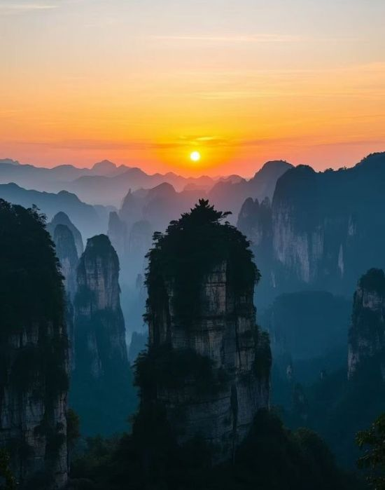

Zhangjiajie City is a prefecture-level city under the jurisdiction of Hunan Province, People's Republic of China, located in northwestern Hunan. It borders Changde City to the east, Huaihua City to the south, Xiangxi Prefecture to the southwest, and Enshi Prefecture of Hubei Province to the northwest. Situated in the heart of the Wuling Mountains, its terrain is predominantly mountainous. Limestone is widely distributed, resulting in numerous karst formations, peak forests, and caves. The Lishui River flows through the entire city, with tributaries such as the Loushui River. The city has a total area of 9,534 square kilometers and a permanent population of 1.524 million, with the Tujia ethnic group accounting for over 60%. Zhangjiajie is a famous tourist city, renowned for its "three thousand unique peaks and eight hundred beautiful streams."

Due to its topography, most of the fun places in Zhangjiajie are surrounded by mountains and lakes. If you are a hiking enthusiast or love sightseeing, then Zhangjiajie will definitely not disappoint you.